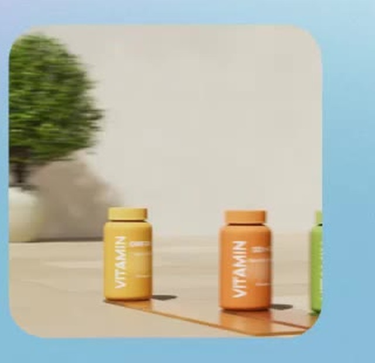

Кейс / 2026
Витамины
Продуктовый 3D-ролик с тремя банками витаминов, цветными дорожками и трансформирующимися подиумами
Направление3D анимация
ИнструментыBlender / After Effects
Год2026

Фрагмент общего видеобаннера / фото проекта добавим отдельно01 / ЗАДАЧА
Концепция и задача
Создать эффект, при котором каждая банка движется по собственной цветной дорожке, а затем часть этой же дорожки поднимается в подиум — без видимого шва или отдельного объекта
02 / ПРОЦЕСС
Как создавался проект
В работе продумывались тайминг движения банок, последовательность подъёма подиумов, материалы с мягким полупрозрачным гелевым характером, камера и финальная композиция
▧Кадры процессаДобавим реальные скриншоты и рендеры
◈Детали и GIFДобавим реальные материалы проекта
03 / РЕЗУЛЬТАТ
Финальная работа
Финальный 3D-ролик собран, музыка подобрана к моментам подъёма подиумов — на эту страницу добавим финальное видео, крупные рендеры и анимационные фрагменты после отбора материалов
▶Финальное видеоЗдесь будет настоящий материал проекта без демонстрационных замен